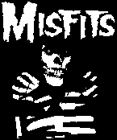
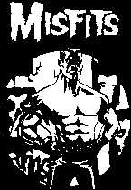
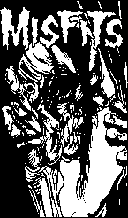
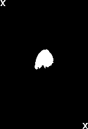
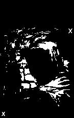
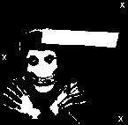
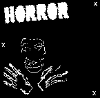

the classic Misfits "fiend" design; white skull/black nose on top (or cut nose
out of tape, apply to shirt and paint over tape-nose to reveal black fabric underneath)

3 color "American Psycho" design (white first, yellow second, red last)


4 color "Horror Business" design (print light-dark: white, yellow, red, black)
3 color "Splatter Fiend" (white, then red, then black)
[instead of the black, you can try the same trick described above for the black nose]
|